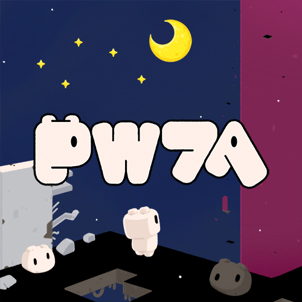

PW7A

Steam版『PW7A』ウィッシュリスト登録受付中！
お知らせ
作品情報
- タイトル
- PW7A
- ジャンル
- 短編パズルアドベンチャー
- 対応プラットフォーム
- Windows / Steam
- 発売日
- 近日公開
- 対応言語
- 日本語・英語
- プレイ人数
- 1人
配信ガイドライン
収益化を含め、実況・配信は自由に行っていただいて大丈夫です。プレイ時間は約1時間を目安としていますが、攻略にかかる時間には個人差があります。早く解いていただくのも、じっくり悩みながら進めていただくのも、どちらも嬉しいです。時間を気にせず、ご自身のペースで楽しんでいただければ幸いです。
音量の調節について
ゲーム開始直後は演出によりBGMがありませんが、ゲームを少し進めると再生が開始されます。ゲーム中「P」キーを押すとPICO-8のポーズメニューが表示されますので、「OPTIONS」から音量を調節可能です。
Credits
- Developer / Game Design
- スイカ食べ食べうさぎ ↗
- Steam版 Music
- シロ ↗
- Steam版 Key Visual
- いちぼ君 ↗